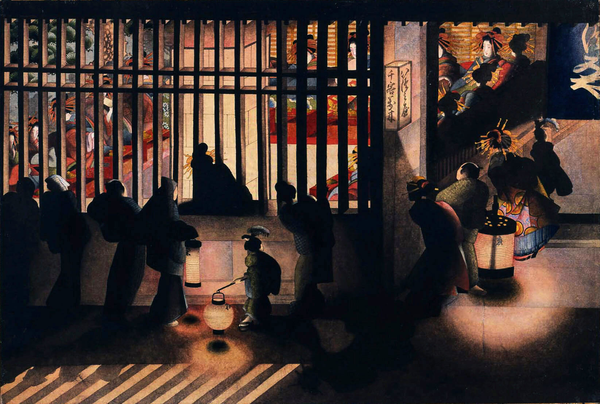
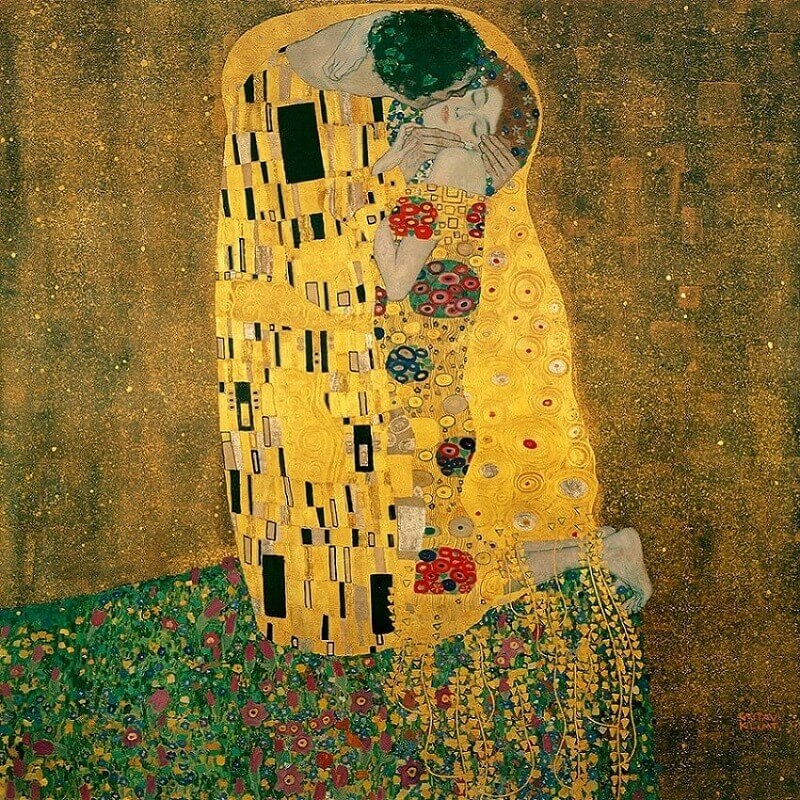
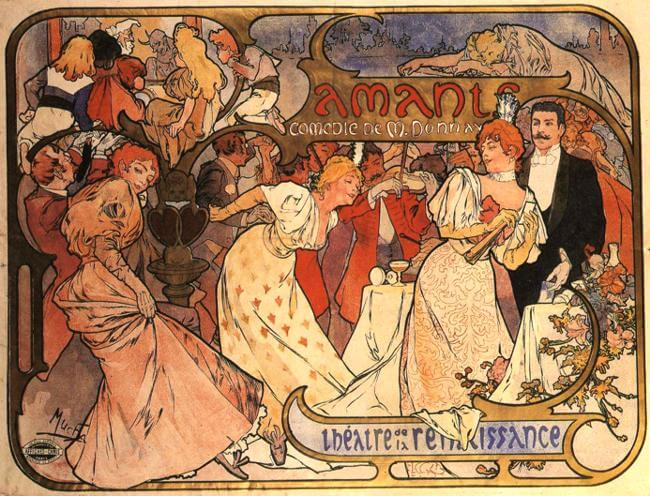
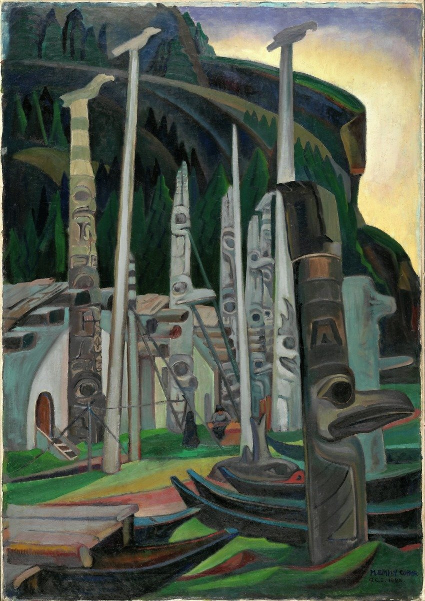
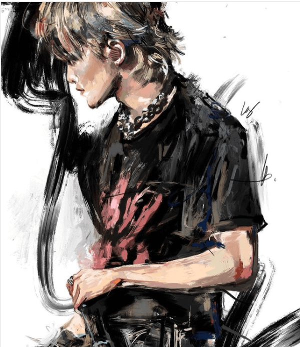

INSPIRATION
It's important for artists to get inspiration from their personal life AND other artists! Think about what motivates you and what common ideas / imagery you get drawn back to.
My important themes? Time, Confidence, Movement in Nature.
This part of my website is to help show where I get inspiration, so please have fun checking out some the artists that inspire me. My personal photos I will leave out - but know that they are important to have!
- Katsuhika Oi
- Japanese artist from the late 1800s. ōi was the daughter of the famous Hokusai, and believed to have completed many of his famous prints in his later life. Oi is was a unique Japanese artist at the time in that she used more colored ink, and filled more of the page with ink, than other fellow Edo period artists at the time. Read more and see more of her works here.
- 
- "Night Scene in the Yoshiwara", 1854, Colored ink on Paper, image credits to website linked above
- Gustav Klimt
- Famous Austrian artist from the early 1900s. Klimt was a member of the Vienna Secession movement and well known for his use of gold foil and paintings with flat repeated shapes. Read more about Klimt here.
- 
- "The Kiss", 1908, Gold Foil and Oil on canvas, image credits to website linked above
- Alphonse Mucha
- Mucha was a famous Czech painter, and famous for his contributions to the Art Nouveau movement, with his delicate, flowing, and poster-like images because of the minimal shading and outlines. Explore more about Mucha here.
- 
- "Amants", 1895, Color Lithograph, image credits to website linked above
- Emily Carr
- Emily Carr was a painter and Modernist artist active in the mid 1900s. Carr is a famous Canadian artist known for her large brushstrokes inspired by the Western Canadian landscape and First Nation Peoples. Learn more about Carr here.
- 
- "Heina", 1928, Oil on canvas, image credits to website linked above
- luisjerion____
- An artist that I found on instagram. I enjoy the texture in their work created through the rough and colorful brushstrokes, as well as the emotions conveyed through the composition and colors. Check out their instagram account/portfolio here.
- 
- "Feel the Vibration", 2022, Digital, image credits to website linked above